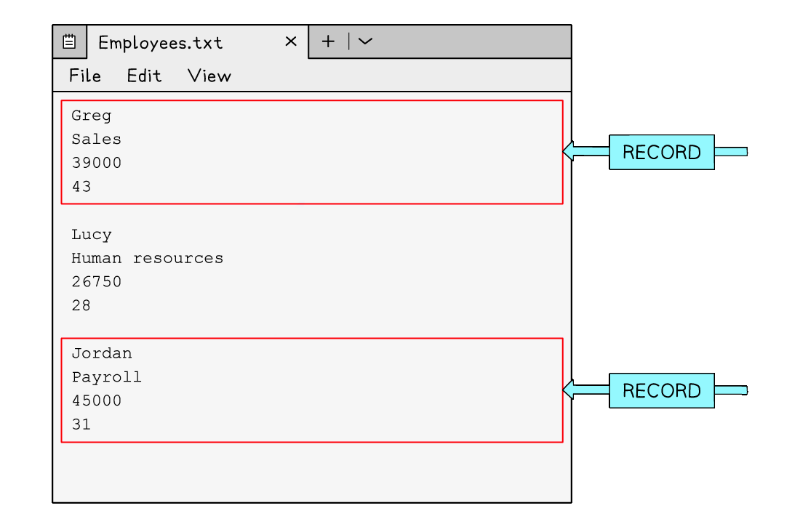

Single Table Databases
What is a database?
- A Database is an organised collection of data
- A database is made up of either one or multiple tables which are made up of fields and records to organise how it stores data
- It allows easy storage, retrieval, and management of information
- A database is useful when working with l arge amounts of data, databases are stored on secondary storage
- A database is often stored on remote servers so multiple users can access it at the same time, useful for online systems
- Data can be sorted and searched efficiently, making use of more advanced structures
- They are more secure than text files
Fields & records
What are fields & records?
- A field is one piece of information relating to one person, item or object
- A field is represented in a database by a column,
- A record is a collection of fields relating to one person, item or object
- A record is represented in a database by a row
Text files
- A text file is useful when working with small amounts of data, text files are stored on secondary storage and ‘read’ into a program when being used
- They are used to store information when the application is closed
- Each entry is stored on a new line or separated with a special identifier, for example, a comma (‘,’)
- It can be difficult in text files to know where a record begins and ends

Validation
- When a table is created, validation rules can be assigned to the different fields
- A validation rule controls what data can be entered into that field
- There are different types of validation checks used to limit what data can be entered into each field
- The validation checks that are used are the same as those that appear in section 7: Algorithm Design & Problem-Solving
| Type | Description |
|---|---|
| Length Check | This type of validation checks the number of characters that have been entered into a field. For example, you might make phone numbers entered have to be eleven characters long |
| Format Check | This type of validation checks data entered meets an exact format. For example, a product code might have to be two letters followed by five numbers |
| Range Check | A range check will check the number entered is within a specific range. For example, the age of a dog would be between 0 - 40. Any other number would be disallowed |
| Presence Check | A presence check can be added to fields which cannot be left blank |
| Type Check | A type check will allow data with a specific data type to be entered into a field. For example, if text was entered into a field which is supposed to contain the date of birth of a person it would not be allowed |
| Check Digits | Check digit validation is a process used to verify the accuracy of numbers such as credit card numbers. A check digit is a single digit added to the end of the number, which is calculated based on a specific algorithm applied to the other digits in the number. When the data is re-entered the same algorithm can be applied, and if it produces a different result the code is incorrect |
You will likely be presented with an example database table and identify either how many fields there are or how many records there are so make sure you remember a record is a row and a field is a column.
A Database Table Containing Student Grades
| StudentID | FirstName | LastName | MarkSubmitted | Percentage |
|---|---|---|---|---|
| 1483792 | Shanay | Giles | Y | 55 |
| 1498378 | Poppy | Petit | N | 20 |
| 1500121 | Diya | Dinesh | Y | 74 |
| 1382972 | Joe | Swaile | Y | 68 |
| 1598264 | Anton | Smith | Y | 34 |
| 1548282 | Felicity | Hall | N | 47 |
Describe two validation checks that could be used to check data being inputted into the table above [4]
How to answer this question
Answer
StudentID could have a length check to ensure 7 characters are entered [2]
FirstName and LastName could have a presence check to make a record cannot be entered without entering the name of the student [2]
A type check of boolean could be applied to the Mark Submitted field so that only Y or N are entered [2]
A range check could be assigned to the Mark column to ensure only numbers between 0 and 100 are entered [2]
Data types
What is a data type?
- A data type is the type of data that can be held in a field and is defined when designing a table
- Examples of common datatypes are:
- Integer - whole number
- Real - decimal number
- Text/alphanumeric - text data
- Character - single
- Date/Time
- Boolean - true or false values
- In the table cars below, the following datatypes would be used:
- car_id: integer
- make: text/alphanumeric
- model: text/alphanumeric
- colour: text/alphanumeric
- price: real
cars
| car_id | make | model | colour | price |
|---|---|---|---|---|
| 1 | Peugeot | 2008 | Red | 24950 |
| 2 | Mazda | MX5 | Blue | 17995 |
| 3 | Citroen | DS4 | Black | 21450 |
| 4 | Ford | Puma | White | 19500 |
Primary Keys
What is a primary key?
- A primary key is a unique field that can be used to identify a record in a table
- customer_id is the primary key for the customers table below
- Other examples of primary keys in database tables would include:
- Student_ID in a school database
- Car_Registration in a car database
- Product_ID in a shop database
| CustomerID | FirstName | LastName | DOB | PhoneNumber |
|---|---|---|---|---|
| 001 | Andrea | Bycroft | 05031976 | 0746762883 |
| 002 | Melissa | Langler | 22012001 | 0756372892 |
| 003 | Amy | George | 22111988 | 074637 |
Key database terminology
| Term | Definition |
|---|---|
| Table | A collection of records with a similar structure |
| Record | A group of related fields, representing one data entry |
| Field | A single piece of data in a record |
| Data type | Type of data held in a field |
| Primary key | A unique identifier for each record in a table, usually an ID number |
A database has been developed for a dance club to store information about their members.
The database contains one table: Members
Figure A shows some data from the table.
Members
| MemberID | FirstName | LastName | DateJoined |
|---|---|---|---|
| 1 | Zarmeen | Hussain | 2024-01-19 |
| 2 | Fyn | Ball | 2024-02-01 |
| 3 | George | Johnson | 2024-02-25 |
| 4 | Ella | Franks | 2024-03-04 |
State the name of the field from the Members table that is the most suitable to use as the primary key [1]
Answer
- (a) MemberID
SQL
What is SQL?
- SQL (Structured Query Language) is a programming language used to interact with a DBMS.
- The use of SQL allows a user to:
- Select data
- Order data
- Sum data
- Count data
Selecting data commands
| Command | Description | Example |
|---|---|---|
| SELECT | Retrieves data from a database table | SELECT * FROM users; (retrieves all data from the ‘users’ table) SELECT name, age FROM users (retrieves names and ages from the ‘users’ table) |
| FROM | Specifies the tables to retrieve data from | SELECT name, age FROM users; (retrieves names and ages from the ‘users’ table) |
| WHERE | Filters the data based on a specified condition | SELECT * FROM users WHERE age > 30; (Retrieves users older than 30) |
| AND | Combines multiple conditions in a WHERE clause | SELECT * FROM users WHERE age > 18 AND city = ‘New York’; (retrieves users older than 18 and from New York) |
| OR | Retrieves data when at least one of the conditions is true | SELECT * FROM users WHERE age < 18 OR city = ‘New York’; (retrieves users younger than 18 or from New York) |
WILDCARDS
’ * ’ and ’ % ’ symbols are used for searching and matching data
’ * ’ used to select all columns in a table
’ % ’ used as a wildcard character in the LIKE operator
SELECT * FROM users;
--(retrieves all columns for the 'users' table)
SELECT * FROM users WHERE name LIKE 'J%';
--(retrieves users whose names start with 'J')
ORDER BY
How data is organised (sorted) when it is retrieved
SELECT Forename, Lastname FROM Students
WHERE StudentID < 10
ORDER BY Lastname, Forename ASC
--(retrieves only the _forename_ and _lastname_ of all students from the _students_ table who have a _studentID_ of less than 10 and displays in ascending order by _lastname_ and _forename_)
SUM
Adds up and outputs the sum of a field
SELECT SUM (Salary) **FROM** tbl_people;
COUNT
Counts the number of rows which match the set criteria
SELECT COUNT (*)
FROM tbl_people
WHERE Salary > 50000;
Examples
- Select all the fields from the Customers table
Command:
SELECT * FROM Customers;
Output:
| ID | Name | Age | City | Country |
|---|---|---|---|---|
| 1 | John Doe | 30 | New York | deer |
| 2 | Jane Doe | 25 | London | UK |
| 3 | Peter Lee | 40 | Paris | France |
- Select the ID, name & age of customers who are older than 25
Command:
SELECT ID, name, age
FROM Customers
WHERE Age > 25;
Output:
| ID | Name | Age |
|---|---|---|
| 1 | John Doe | 30 |
| 3 | Peter Lee | 40 |
- Select the name and country of customers who are from a country that begins with ‘U’
Command:
SELECT Name, Country
FROM Customers
WHER Country LIKE 'U%';
Output:
| Name | Country |
|---|---|
| John Doe | deer |
| Jane Doe | UK |
- Select all fields of customers who are from ‘London’ or ‘Paris’
Command:
SELECT *
FROM Customers
WHERE City = 'London' OR City = 'Paris';
Output:
| ID | Name | Age | City | Country |
|---|---|---|---|---|
| 2 | Jane Doe | 25 | London | UK |
| 3 | Peter Lee | 40 | Paris | France |
Below is a table of animals called tbl_animals
| Animal | Breeding | Number of Young |
|---|---|---|
| Red Fox | Yes | 4-6 |
| Rabbit | Yes | 4-12 |
| African Elephant | Yes | 1 |
| Blue Whale | No | 1 |
| Orangutan | Yes | 1 |
| Polar Bear | Yes | 1-3 |
| Dolphin | Yes | 1 |
| Kangaroo | Yes | 1 |
| Lion | Yes | 1-6 |
| Penguin | Yes | 1 |
Complete this SQL statement to display all of the animal breeds that are currently breeding and there was only one young born this year [3]
SELECT…
FROM…
WHERE…
Answer
SELECT Animal
FROM tbl_animals
WHERE Breeding = "Yes" AND Number of Young = 1